PITCHKEEP
Premier League ranks
Also: Ball Keep Football · BaseBallKeep
The X
The X
Memes from X.
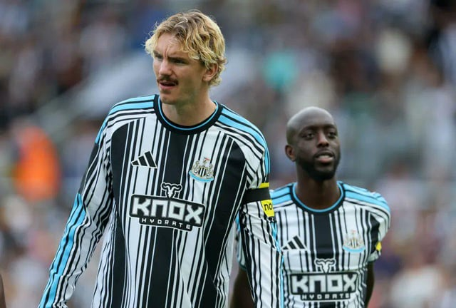
RedditWorst shirt of all time?
submitted by /u/Ummagumma- [link] [comments]
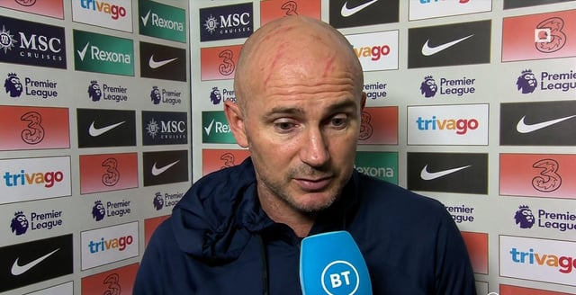
RedditWhat happened to Frank Lampard? 🤔
submitted by /u/Ummagumma- [link] [comments]
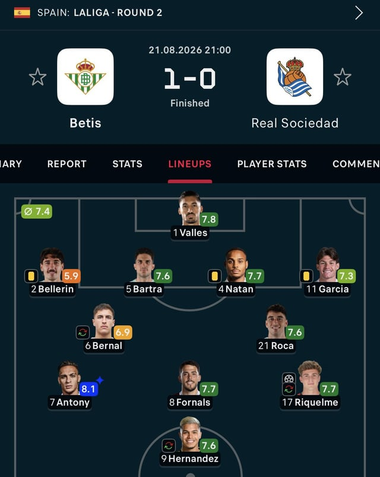
RedditMOTM, football is back!!!
submitted by /u/Jiukojutsu [link] [comments]
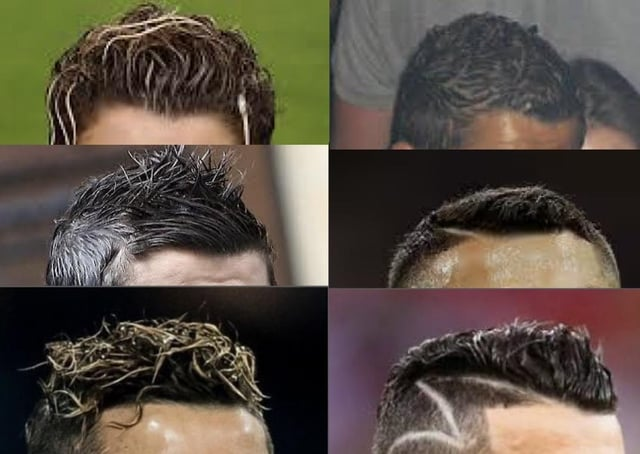
Reddityou’re down 1-0 in the World Cup final 85th minute who do you put your hopes on?
submitted by /u/Great-Touch-7831 [link] [comments]
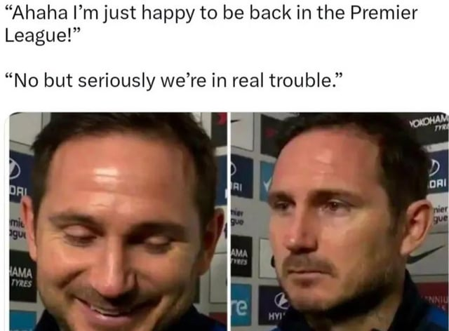
RedditCoventry blown away by Arsenal and Arteta boys
submitted by /u/cottoncandyisgood_3 [link] [comments]
RedditThis sub when Arsenal wins and scores all goals from open play
submitted by /u/Concerned-Mann [link] [comments]
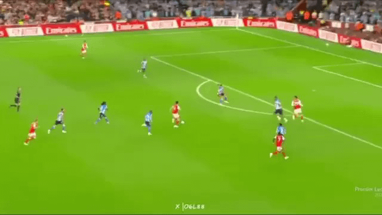
RedditArsenal are going to walk the league this season, look at this team goal…
submitted by /u/FM_highlights [link] [comments]
RedditFootball gossip: Endrick, Jackson, Osimhen, Nkunku, Alvarez
Atletico Madrid have agreed to sell Argentina striker Julian Alvarez to Arsenal , but the 26-year-old has rejected the move as he only wants
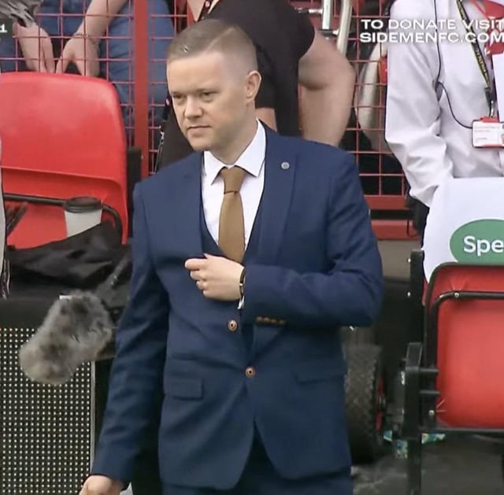
RedditFrank Lampard returning to the Prem as manager
submitted by /u/drmantis_toboggan13 [link] [comments]
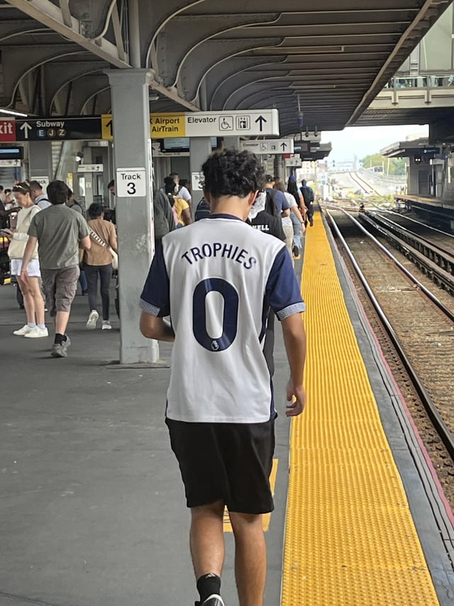
RedditOutjerked by this guys Spurs jersey
submitted by /u/Acidflightgoat [link] [comments]
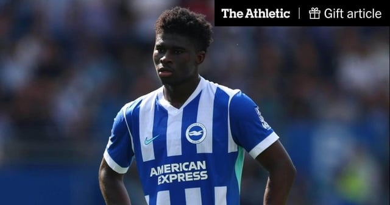
RedditCarlos Baleba set for Manchester United medical after £70m deal agreed with Brighton
Brighton & Hove Albion’s Carlos Baleba is set to undergo a medical with Manchester United after the two clubs reached an agreement for the m
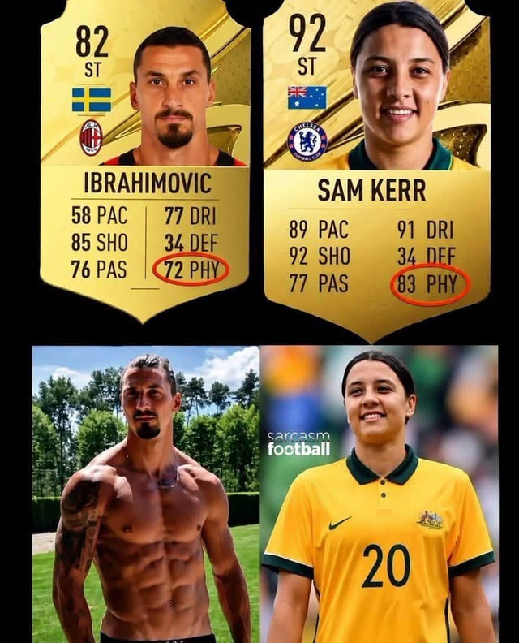
RedditOkay, I get it.
submitted by /u/Born_Entrepreneur581 [link] [comments]
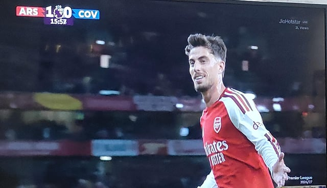
RedditSTOP THE COUNT NOW! Ballon D'or 2027 Frontrunner Kai Goatvertz!
submitted by /u/StupidNoobyIdiot [link] [comments]
RedditInter complete signing of Curtis Jones from Liverpool
Curtis Jones has completed his move from Liverpool to Serie A champions Inter in a €35million (£30m) deal. The 25-year-old midfielder travel
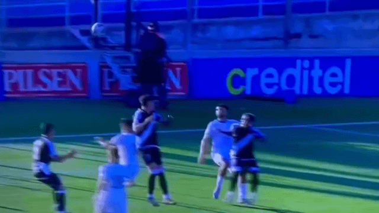
RedditTypical Uruguayan Football
submitted by /u/L0lnator [link] [comments]
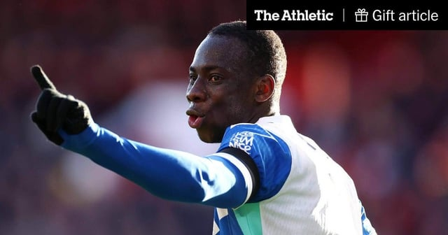
RedditLiverpool see £60m transfer offer for Yankuba Minteh rejected by Brighton
Liverpool have seen a second offer for Yankuba Minteh turned down by Brighton & Hove Albion. The Athletic reported on Thursday that Brighton
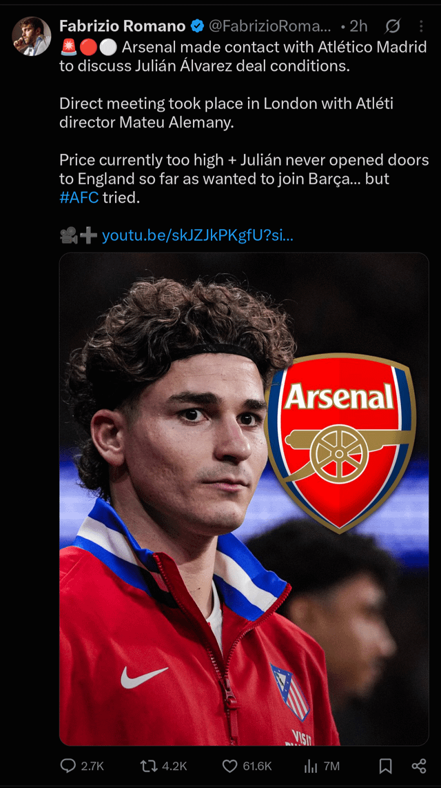
RedditIt's like an Indian arrange marriage. Girl's father rejects the girl's hot boyfriend and forces the girl to marry a rich ugly guy
submitted by /u/Lonely-Canary-5610 [link] [comments]
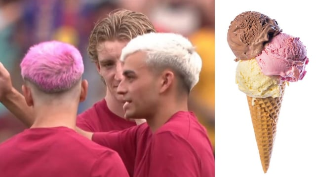
RedditOne scoop please 😍
submitted by /u/Legal-Flatworm1633 [link] [comments]
RedditHow Shakhtar and Chelsea agreed for Ukrainian club to play Champions League games at Stamford Bridge
There will be Champions League football at Stamford Bridge this season after all... with Chelsea agreeing for Shakhtar Donetsk to play their
RedditArgentinean news station shows AI video that claims Infantino wanted to jail Tapia and rape Nico Paz if they won the Final
submitted by /u/Rokolin [link] [comments]
RedditHEARTBREAKING:Savinho,22 years old,young Brazilian talent has taken retirement from winning trophies
submitted by /u/Unfair-Gur7325 [link] [comments]
 Reddit
RedditThe biggest curse in Manchester United history returns
submitted by /u/Ummagumma- [link] [comments]
RedditThe photographer who made them pose like that should be a fellow jerker or the admin of this subreddit, because wtf is this?!
submitted by /u/Valuable-Command3664 [link] [comments]
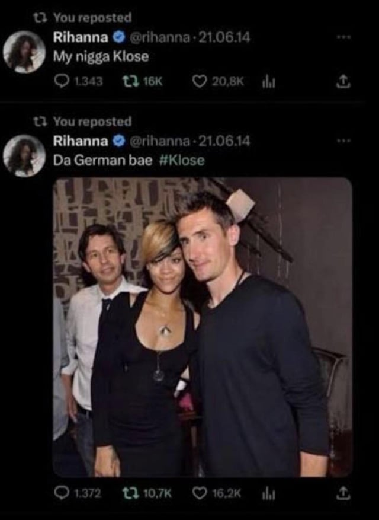
RedditNobody’s beating 2014 Miroslav Klose🫡
submitted by /u/More-Put-8790 [link] [comments]
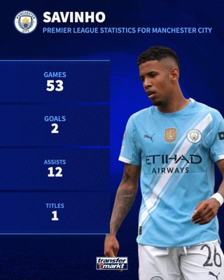
RedditTransfer market is cooked. 100M used to get you Kaka, Bale… Now it gets you 2 goals in 53 games in the EPL
submitted by /u/Cero_Miedo4090 [link] [comments]
RedditI decided to get a tattoo of the GOAT to show my respect
Got a lot of nasty looks since I got this in June. Probably Ronado fans. submitted by /u/WholeDonkey2689 [link] [comments]
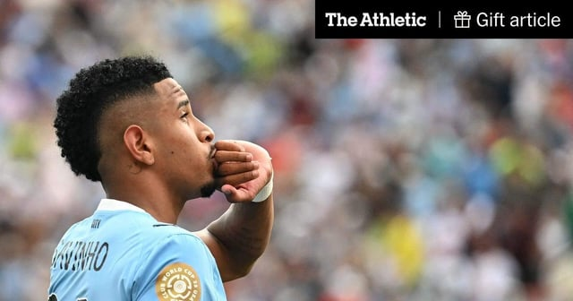
RedditWhy Savinho makes sense for Spurs: An elite tight-space dribbler who can operate on both flanks
The £85million price tag of Savinho is rightly questionable, but his profile fits Spurs' current needs and there's room for development for
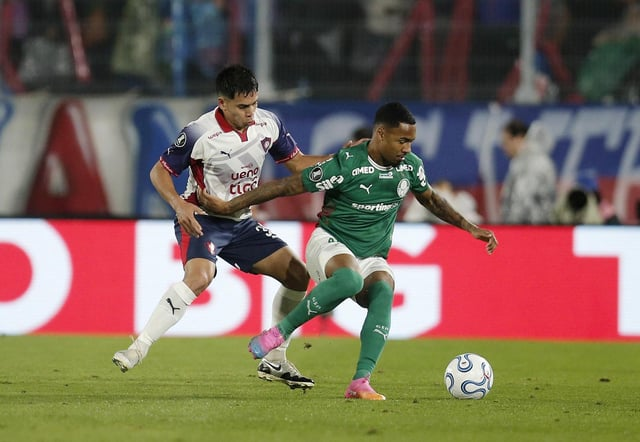
RedditMan City Agree Personal Terms With Allan Elias as Palmeiras Negotiations Begin
submitted by /u/AccomplishedBrush157 [link] [comments]
Redditfixed it
submitted by /u/High-Ground [link] [comments]
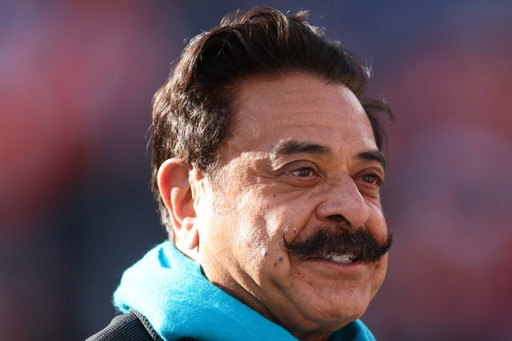
RedditPremier League: US owners dominate over half of 20 clubs
Yank nonsense, I blame Ted Lasso. submitted by /u/tylerthe-theatre [link] [comments]
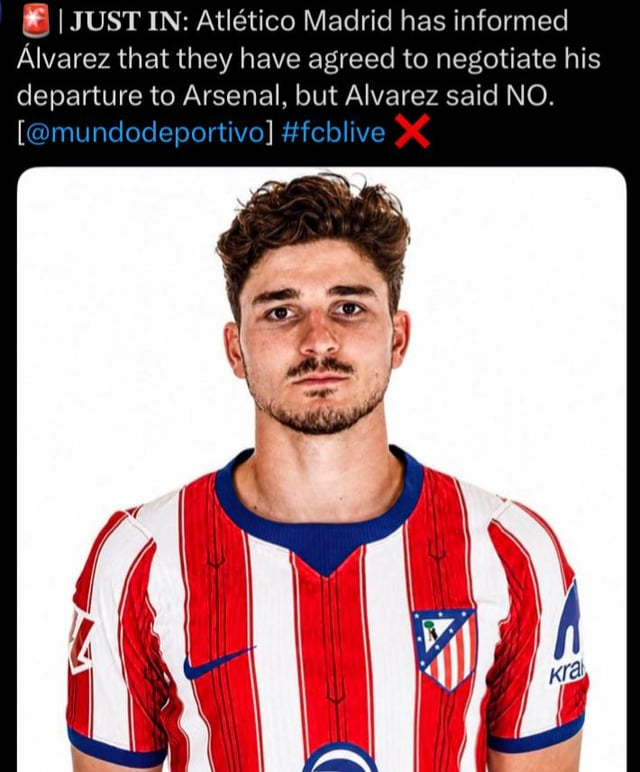
RedditOutjerked by Julian
submitted by /u/cottoncandyisgood_3 [link] [comments]
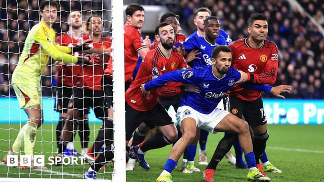
RedditNew corner rules: The Premier League's plan to end set-piece chaos
submitted by /u/dreigilb [link] [comments]
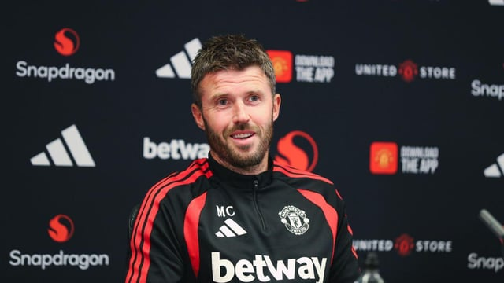
RedditMichael Carrick: 'Ridiculous' to say Man United have easy start
submitted by /u/tylerthe-theatre [link] [comments]
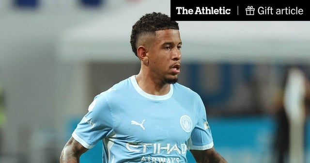
RedditTottenham agree package worth £85m for Manchester City’s Savinho
Tottenham Hotspur have reached an agreement to sign Manchester City winger Savinho in a deal that could be worth up to £85million. Spurs are
 x.com
x.comPremier League, back today. Here’s to the next 10 months 🥂
Premier League, back today. Here’s to the next 10 months 🥂 x.com
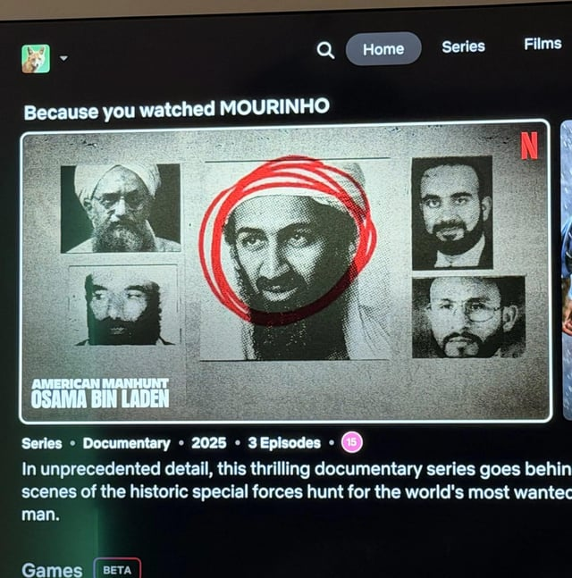
Redditoutjerked by netflix
submitted by /u/bichib0i [link] [comments]